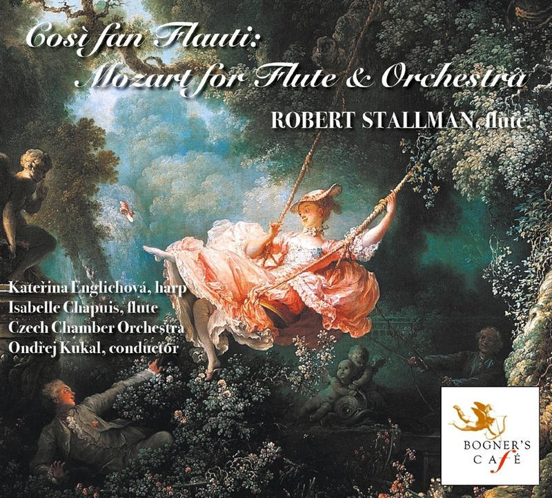
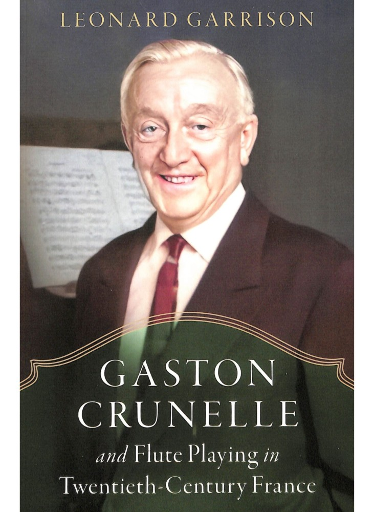

Article
Isabelle Chapuis: The Perfect Life of a Flutist
A feature on Isabelle Chapuis’s musical life in International Musician.
Read articleArticle
A feature on Isabelle Chapuis’s musical life in International Musician.
Read articleVideo
A performance of the first movement of Khachaturian’s Concerto for Flute and Orchestra.

Video
A performance of the second movement of Khachaturian’s Concerto for Flute and Orchestra.

Video
A performance of the third movement of Khachaturian’s Concerto for Flute and Orchestra.

Video
Isabelle Chapuis speaks about Marcel Moyse.

Video
A live performance of Jean-Baptiste Bréval’s Symphonie Concertante with Isabelle Chapuis, flute, and Rufus Olivier, bassoon.

Video
A performance of Devienne’s Sonata in E minor for flute and piano.

Video
A performance of Edgar Varèse’s Density 21.5.

Density 21.5 has always held a very special place in my life. Before I was born, Edgard Varèse was my mother's teacher, and he presented her with a signed copy of the score. Because of that extraordinary connection, this remarkable work has always felt like more than a cornerstone of the flute repertoire—it has been part of my family's musical story. Every time I return to Density 21.5, I am reminded of that legacy and the generations of musicians who have shaped my own journey.

Featured Recording
Performers
Isabelle joins Robert Stallman, Kateřina Englichová, and the Czech Chamber Orchestra in this recording featuring Mozart's Concerto for Flute and Harp, K. 299, along with Robert Stallman's imaginative flute arrangements of Mozart's music.
Purchase Recording
Featured Teacher Biography
Author
A scholarly book on Gaston Crunelle and flute playing in twentieth-century France.
Find the Book